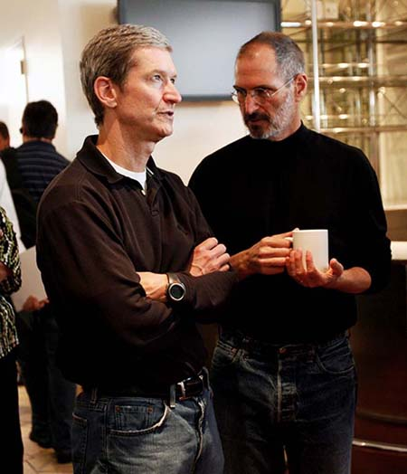

Chương 27

hi Steve Jobs quay trở lại Apple và chế ra các quảng cáo “Tư duy Khác biệt” cùng mẫu máy tính iMac ngay trong năm đầu tiên, nó đã khẳng định điều mà hầu hết mọi người đều đã biết rõ: rằng Steve Jobs có thể sáng tạo và là một người có tầm nhìn, ông đã thể hiện điều đó trong nhiệm kì đầu tiên ở hãng Apple. Điều ít sáng rõ hơn ở đây là liệu rằng ông có khả năng điều hành một công ty hay không. Rõ ràng là ông chưa hề thể hiện được điều đó trong nhiệm kì trước đó.
Jobs dấn thân vào sứ mệnh của mình với thứ chủ nghĩa thực dụng chú trọng chi tiết, gây choáng váng cho những người vốn đã quen với kiểu huyễn tưởng của ông, rằng các quy luật của vũ trụ này không thể áp dụng với ông được, “ông ấy trở thành một nhà quản lí, khác hẳn với một nhà điều hành hay một người nhìn xa trông rộng đơn thuần, và điều đó gây ngạc nhiên thích thú cho chúng tôi,” Ed Woolard chia sẻ, ông là thành viên ban giám đốc đã lôi kéo Jobs trở lại Apple.
Phương châm quản lí của Jobs là “Tập trung.” ông loại bỏ hết tất cả những dòng sản phẩm dư thừa và cắt giảm những thành phần ngoại lai trong phần mềm điều hành mới mà Apple đang phát triển, ông từ bỏ thứ ham muốn cuồng-kiểm-soát kiểu bắt buộc phải sản xuất mọi sản phẩm trong các nhà máy của mình, thay vào đó là thuê ngoài việc chế tạo mọi thứ, từ các bảng mạch cho tới cả những chiếc máy tính hoàn thiện. Và ông thi hành kỉ luật khắt khe đối với các đối tác cung ứng của Apple. Khi ông nắm quyền trở lại, Apple đang phải gánh chịu lượng sản phẩm tồn tương đương giá trị của hai tháng trong các nhà kho, nhiều hơn bất cứ công ty công nghệ nào. Giống như trứng và sữa, máy tính cũng có tuổi thọ trên kệ hàng rất ngắn, vậy nên lượng hàng tồn này tương đương với một đòn trị giá 500 triệu USD đánh vào lợi nhuận. Đến đầu năm 1998, Jobs đã giảm một nửa con số đó, xuống còn một tháng.
Những thành công của Jobs có giá hẳn hoi, bởi chính sách đối ngoại kiểu mềm mỏng vẫn chưa phải là một phần trong vốn tiết mục của ông. Khi ông quyết định rằng một bộ phận của hãng chuyển phát nhanh Airbone Express không giao nhận các linh kiện máy tính đủ nhanh, ông lập tức ra lệnh cho quản lí của Apple chấm dứt hợp đồng. Khi vị quản lí này phản bác rằng làm như vậy sẽ dẫn tới kiện tụng, Jobs đáp lại, “Cứ thông báo với họ là nếu lằng nhằng, họ sẽ không đời nào kiếm được một cắc nào từ cái công ty này đâu, không đời nào.” Vị quản lí kia cắt hợp đồng, rồi thì có kiện tụng thật, và phải mất một năm để dàn xếp đâu đó. “Các quyền chọn cổ phiếu của tôi sẽ trị giá đến 10 triệu USD nếu tôi vẫn giữ hợp đồng,” vị quản lí kia kể, “nhưng tôi biết là tôi không thể khăng khăng ý mình được - và ông ta có thể đuổi cổ tôi đi ngay ấy chứ.” Nhà phân phối mới của Apple được yêu cầu cắt giảm lượng trữ kho xuống 75% và họ đã làm được. “Dưới trướng Steve Jobs, sẽ không có một mảy may dung thứ nào cho việc thực thi kém hiệu quả,” CEO của hãng này nói. Đến một thời điểm, khi tập đoàn công nghệ VLSI gặp khó khăn trong việc giao đủ lượng chip đúng thời hạn, Jobs đùng đùng lao vào một cuộc họp và bắt đầu gào thét rằng họ “chỉ là những thằng khốn bất lực.” Công ty này cuối cùng cũng giao các lô chip cho hãng Apple đúng hạn, và các giám đốc của họ còn chế ra riêng những chiếc áo khoác phô trương ở sau lưng dòng chữ “Đội FDA”.
Sau ba tháng làm việc dưới trướng Jobs, giám đốc điều hành đương nhiệm của Apple không thể chịu nổi áp lực, và ông này từ chức. Trong suốt gần một năm trời Jobs tự mình gánh vác vị trí điều hành, vì tất cả các ứng cử viên triển vọng mà ông phỏng vấn đều “có vẻ là mẫu sản xuất theo kiểu cũ”, ông kể lại. ông muốn ai đó có thể xây dựng những nhà máy và dây chuyền cung ứng thức thời, như những gì Michael Dell đã làm. Rồi, vào năm 1998, Steve Jobs gặp Tim Cook, một chuyên gia cung ứng và chuỗi cung ở Hãng Máy tính Compaq, một người đàn ông ba-mươi-bảy tuổi với phong thái nho nhã. Tim về sau không chỉ đảm nhận trọng trách giám đốc điều hành mà còn trở thành một thành viên hậu trường không thể thiếu trong việc vận hành cả hãng Apple. Như Jobs kể lại thì:
Tim Cook xuất thân từ ngành cung ứng, chính xác là chuyên ngành chúng tôi đang cần. Tôi nhận ra rằng anh ấy và tôi nhìn nhận mọi thứ theo cách giống hệt nhau. Tôi đã viếng thăm rất nhiều nhà máy thức thời ở Nhật Bản, và tôi đã xây dựng một nhà máy như thế cho Mac và ở NeXT. Tôi biết rõ thứ tôi muốn, và tôi gặp Tim, và anh ấy cũng muốn thứ giống hệt như thế. Nên chúng tôi bắt đầu làm việc với nhau, và chẳng mất bao lâu tôi tin tưởng chắc chắn rằng anh ấy biết chính xác phải làm gì. Anh ấy có viễn kiến giống hệt tôi và chúng tôi có thể đối thoại với nhau ở tầm chiến lược cao, và lẽ ra tôi đã bỏ quên rất nhiều thứ nếu Tim không đến và gõ nhẹ vào tôi nhắc nhở.

Tim Cooks và Jobs
Cook, con trai của một công nhân đóng tàu, sinh ra và lớn lên ở Robertsdale, Alabama, một thị tứ nhỏ nằm giữa Mobile và Pensacola, cách Gulf Coast chừng nửa giờ xe. Tim theo học chuyên ngành kĩ sư công nghiệp tại Auburn, có được tấm bằng kinh doanh ở trường Duke và trong suốt mười hai năm sau đó, Tim làm việc cho hãng IBM ở Trung tâm Nghiên cứu vùng Tam giác Bắc Carolin. Vào thời điểm Jobs phỏng vấn, Tim vừa mới nhận việc ở Compaq. Từ trước tới nay, Tim luôn là một kĩ sư rất logic, và Compaq khi đó dường như là một lựa chọn sự nghiệp hợp lí hơn, nhưng Tim đã bị đánh bẫy bởi sức cuốn hút toát ra từ Steve. “Chỉ năm phút trong cuộc phỏng vấn đầu tiên với Steve, tôi đã muốn quẳng đi mọi sự phòng bị cùng logic và gia nhập Apple ngay lập tức,” về sau Tim kể lại. “Trực giác nói với tôi rằng gia nhập Apple sẽ là cơ hội có-một-không-hai-trong-đời để được làm việc với một thiên tài sáng tạo.” Và Tim đã làm thế thật. “Kĩ sư được dạy phải đưa ra các quyết định dựa trên phân tích, nhưng có những lúc dựa vào dũng khí cùng trực giác mới là thiết thân nhất.”
Tại Apple, vai trò của Tim trở thành “hiện thực hóa trực giác của Jobs”, chức phận mà Tim thực hiện với thái độ cẩn trọng lặng lẽ. Không có ý định kết hôn, Tim dành toàn tâm toàn lực vào công việc. Hầu như hằng ngày ông đều thức dậy lúc 4h30 sáng, gửi email, rồi dành một giờ đồng hồ tập thể dục, và có mặt ở bàn làm việc chỉ sau 6h một chút, ông xếp lịch tối Chủ nhật hằng tuần cho các cuộc hội thảo điện thoại để chuẩn bị cho tuần mới sắp tới. Trong một công ty được lãnh đạo bởi một CEO có xu hướng cáu giận thất thường và luôn sẵn sàng rủa xả, Cook kiểm soát các tình huống với lối cư xử bình tĩnh, giọng nói với trọng âm Alabama êm dịu và những cái nhìn lặng lẽ. “Mặc dù có thể đùa giỡn thật, nhưng nét mặt thường trực của Cook là cau có, và khiếu hài hước của anh ta thật là khiêm tốn,” Adam Lashinsky viết trên tờ Fortune. “Trong các buổi họp, Cook nổi tiếng với những quãng ngừng lời rất lâu và khó chịu, khi tất cả những gì anh nghe thấy là âm thanh loạt xoạt bóc lớp giấy bọc những thanh kẹo tăng lực mà anh ta hay ăn thôi.” Trong một cuộc họp khoảng đầu nhiệm kì của mình, Cook được thông báo là Apple có vấn đề với một trong những nhà cung cấp Trung Quốc. “Chuyện này tệ quá,” ông thốt lên. “Ai đó ở Trung Quốc phải lèo lái vụ này.” Ba mươi phút sau ông nhìn vào một giám đốc thừa hành có mặt ở bàn và lạnh lẽo hỏi, “Sao anh còn ở đây?” Vị giám đốc này đứng dậy, lái xe thẳng tới phi trường San Francisco, mua vé bay tới Trung Quốc. Anh này sau đó trở thành một trong những phó tướng thân cận nhất của Cook.
Cook giảm bớt số lượng nhà cung cấp trọng yếu của Apple từ một trăm xuống còn hai mươi tư, ép buộc họ phải đưa ra những thỏa thuận có lợi hơn nhằm giữ được hợp đồng, thuyết phục nhiều đối tác dời đến bên cạnh các nhà máy của Apple và đóng cửa mười trong số mười chín nhà kho của công ty. Nhờ giảm thiểu số địa điểm mà hàng tồn kho có thể chất đống lại, Cook cũng giảm thiểu được lượng trữ kho. Jobs đã cắt giảm lượng trữ kho từ tương đương hai tháng xuống còn một tháng hồi đầu năm 1998. Đến tháng 9 năm đó, Cook đã giảm con số đó xuống còn sáu ngày. Đến tháng 9 năm tiếp đó, nó đã giảm xuống thành một con số ấn tượng: giá trị hàng tồn tương đương hai ngày. Thêm vào đó, Cook còn cắt giảm quy trình sản xuất một chiếc máy tính Apple từ bốn tháng xuống còn hai tháng. Tất cả những hành động này không chỉ tiết kiệm tiền bạc, nó còn cho phép mỗi chiếc máy tính có được những thành phần tân tiến nhất sẵn có.
Áo thun cao cổ và nhóm công tác
Trong một chuyến đi sang Nhật Bản hồi đầu thập niên 1980, Jobs đã hỏi Akio Morita, chủ tịch của hãng Sony, rằng tại sao tất cả các nhà máy của tập đoàn đều mặc đồng phục. “Ông ấy tỏ ra rất ngượng và bảo với tôi rằng sau chiến tranh, không ai có quần áo mặc, và những công ty như Sony phải cung cấp cho công nhân cái gì đó để mặc hằng ngày,” Jobs hồi tưởng. Năm tháng qua đi, đồng phục đã dần phát triển lên thành phong cách mang tính dấu ấn của riêng họ, nhất là những hãng như Sony, và nó trở thành một phương thức gắn kết công nhân viên với hãng. “Tôi quyết định rằng tôi cũng muốn kiểu gắn kết như thế với Apple,” Jobs nhớ lại.
Sony, với thái độ trân trọng phong cách, đã đặt hàng nhà thiết kế trứ danh Issey Miyake sáng tạo nên những bộ đồng phục cho riêng mình. Đó là một chiếc áo bảo hộ bằng vải sợi nilon tổng hợp với tay áo có thể kéo khóa cho rời ra để trở thành một chiếc áo vest. “Thế nên tôi gọi cho Issey và đề nghị ông ấy thiết kế một mẫu vest cho Apple,” Jobs kể. “Tôi trở về với mấy kiểu mẫu và bảo mọi người là nếu tất cả mà mặc những chiếc vest này thì tuyệt lắm. ôi trời, tôi bị la ó phản đối rầm rầm. Ai nấy đều ghét cay ghét đắng cái ý tưởng này.” Tuy vậy, trong quá trình đó, Jobs đã trở thành bằng hữu thân thiết với Miyake và thường xuyên ghé thăm ông bạn. Jobs còn bắt đầu thích ý tưởng sẽ có một bộ đồng phục cho riêng mình, bởi cả tính tiện dụng thường nhật của nó (cơ sở hợp lí Jobs luôn đòi hỏi) và năng lực chuyển tải một phong cách mang dấu ấn cá nhân. “Thế là tôi đề nghị Issey chế ra cho tôi mấy chiếc áo thun cao cổ màu đen mà tôi thích, và Isey may cho tôi khoảng chừng trăm cái.” Jobs nhận thấy vẻ ngạc nhiên của tôi khi ông kể chuyện này, thế là ông ra dấu chỉ vào chỗ áo chất đống trong tủ. “Đó tôi mặc đấy,” ông nói. “Tôi có đủ áo để mặc đến hết cả đời.”
Bất chấp bản tính chuyên quyền độc đoán của mình - không bao giờ cung kính trước bệ thờ đồng thuận - Jobs lại nỗ lực hết sức để nuôi dưỡng văn hóa cộng tác ở Apple. Rất nhiều công ty tỏ ra tự hào vì ít họp hành. Jobs lại có rất nhiều: một phiên họp nhân sự cao cấp mỗi thứ Hai, một phiên họp chiến lược tiếp thị tất cả các chiều thứ Tư, và các phiên họp đánh giá sản phẩm liên tu bất tận. Luôn dị ứng với PowerPoint và các hình thức trình chiếu khuôn mẫu cứng nhắc, Jobs khăng khăng rằng mọi người ngồi quanh bàn cứ việc quẳng ra các vấn đề từ mọi khía cạnh và quan điểm khác nhau từ những phòng ban chuyên môn riêng biệt.
Bởi Jobs tin rằng lợi thế to lớn của Apple chính là tính tích hợp của toàn bộ công cụ - từ thiết kế đến phần cứng, phần mềm và nội dung - nên ông muốn tất cả các bộ phận trong công ty cũng phải làm việc song song với nhau. Những cụm từ ông luôn dùng là “cộng tác sâu sắc” và “kĩ thuật đồng quy.” Thay vì một quy trình phát triển trong đó sản phẩm sẽ được chuyển tiếp liên tục từ khâu kĩ thuật sang thiết kế tới sản xuất tới tiếp thị và phân phối, những phòng ban riêng biệt này cộng tác đồng thời với nhau. “Phương pháp của chúng tôi là phát triển những sản phẩm tích hợp, và điều đó đồng nghĩa với việc quy trình của chúng tôi cũng phải mang tính tích hợp và cộng tác,” Jobs nói.
Cách tiếp cận này cũng được áp cả vào việc tuyển dụng những vị trí chủ chốt. Jobs sẽ cho các ứng cử viên gặp gỡ những lãnh đạo hàng đầu của công ty - Cook, Tevanian, Schiller, Rubinstein, Ive chứ không chỉ là người phụ trách từng bộ phận riêng lẻ mà các ứng viên này muốn làm việc. “Rồi tất cả chúng tôi sẽ họp lại với nhau mà không có ứng cử viên đó và nói chuyện xem liệu người đó có phù hợp không,” Jobs nói. Mục tiêu của Jobs là đề cao cảnh giác “cơn bùng nổ những kẻ đần” dẫn tới hệ quả là một công ty bị đệm bởi những người có năng lực thứ cấp: Với đa phần các thứ trên cuộc đời này, mức chênh lệch giữa tốt nhất và trung bình chỉ là 30% hay khoảng vậy. Chuyến bay tốt nhất, bữa ăn tốt nhất, nó có thể hơn 30% so với chuyến bay, bữa ăn bình thường của anh. Cái mà tôi nhìn thấy ở Woz chính là một người cừ hơn 50 lần so với một kĩ sư bình thường. Anh ta có thể tổ chức những cuộc họp ngay trong đầu mình. Đội chế tạo Mac chính là một nỗ lực nhằm xây dựng một nhóm cộng tác toàn diện như thế, toàn các tuyển thủ hạng A. Mọi người đều bảo là họ sẽ không thể hòa hợp với nhau, rằng họ ghét phải làm việc cùng nhau. Nhưng tôi nhận ra rằng các tuyển thủ hạng A chỉ thích làm việc với các tuyển thủ hạng A, họ chỉ không thích làm việc với tuyển thủ hạng c thôi. Tại Pixar, đó là một công ty chỉ gồm toàn các tuyển thủ hạng A. Khi tôi quay trở lại Apple, đó chính là điều tôi quyết định phải gắng làm cho bằng được. Anh cần phải có một quy trình tuyển dụng cộng tác. Khi chúng tôi tuyển ai đó vào, kể cả là họ có làm việc trong mảng tiếp thị đi chăng nữa, tôi cũng sẽ sắp xếp để họ nói chuyện với các chuyên viên thiết kế và các kĩ sư. Hình mẫu của tôi là J. Robert Oppenheimer. Tôi có đọc về kiểu người mà ông kiếm tìm cho dự án chế tạo bom nguyên tử. Tôi thì chẳng thể nào bén gót nổi ông ấy, nhưng đó là thứ mà tôi khao khát làm được.
Quy trình này có thể rất đáng sợ, nhưng Jobs rất có con mắt tinh đời nhận ra nhân tài. Khi công ty tìm kiếm chuyên viên thiết kế giao diện đồ họa cho hệ điều hành mới của Apple, Jobs nhận được email từ một anh chàng trẻ tuổi và mời cậu đến. ứng viên này quá hồi hộp, và buổi gặp gỡ không suôn sẻ cho lắm. Cuối ngày hôm đó, Jobs tình cờ đụng phải cậu, lúc ấy đang chán chường ngồi bên ngoài hành lang. Anh chàng hỏi liệu rằng cậu ta có thể trưng ra cho Jobs thấy một trong những ý tưởng của mình không, thế là Jobs nhìn qua vai cậu và trông thấy một bản chạy thử nho nhỏ, sử dụng Adobe Director, một phương thức để sắp xếp nhiều biểu tượng hơn vào thanh ngang cuối màn hình. Khi anh chàng di con trỏ qua các biểu tượng chen chúc nhau chỗ thanh ngang, con trỏ mô phỏng một chiếc kính phóng đại và làm cho bong bóng của mỗi biểu tượng bung ra to hơn.
“Tôi thốt lên, „ôi Chúa ơi,” và tuyển cậu ấy ngay lập tức,” Jobs nhớ lại. Chức năng này trở thành một phần dễ mến của Mac osx, và chuyên viên thiết kế này sau đó tiếp tục sáng tạo nên những chức năng như là cuốn trang quán tính cho màn hình đa cảm ứng (một chức năng thú vị khiến cho màn hình vẫn tiếp tục trượt thêm chút xíu sau khi bạn đã dừng cuốn trang.) Những kinh nghiệm của Jobs tại NeXT giúp ông chín chắn hơn nhiều, nhưng chẳng khiến cho ông vui tính thêm mấy. ông vẫn không có bằng lái chiếc Mercedes và vẫn cứ đậu xe vào lô dành cho người tàn tật, đôi lúc còn bành trướng ra tận hai lô. Việc này đã trở thành trò châm biếm cho mọi người. Nhân viên Apple chế ra các bảng hiệu, trên đó có đề “Đậu Chỗ Khác” và ai đó còn vẽ lên lô của người tàn tật biểu tượng xe đẩy với logo Mercedes.
Ai ai cũng được cho phép, thậm chí là khuyến khích đương đầu với Jobs và đôi khi ông cũng tỏ ý tôn trọng họ vì điều đó. Nhưng bạn phải chuẩn bị sẵn sàng cho việc ông ấy tấn công bạn, thậm chí là nhai đầu bạn luôn, trong lúc ông xử lí các ý tưởng của bạn. “Ngay lúc ấy thì đừng hòng bạn thắng cuộc tranh luận với Jobs, nhưng đôi khi, đến chung cục, thì bạn lại giành phần thắng,” James Vincent, một chuyên viên quảng cáo sáng tạo trẻ tuổi làm việc với Lee Clow kể lại. “Bạn trình lên ý tưởng gì đó và ông ta tuyên bố, „Đấy là một ý ngu xuẩn,‟ rồi sau đấy ông ta quay trở lại và bảo, „Chúng ta sẽ phải làm thế này này.‟ Và bạn muốn thốt lên là, „Đấy là cái tôi đã trình cho ông hai tuần trước và ông bảo là ý tưởng ngu xuẩn còn gì.‟ Nhưng bạn không thể làm thế được.
Thay vào đó, bạn sẽ nói, Thật là một ý tưởng tuyệt vời, chúng ta làm vậy đi.” Mọi người cũng phải dần quen với những lời quả quyết thỉnh thoảng cũng sai lầm và phi lí trí của Jobs. Đối với cả gia đình lẫn đồng nghiệp, ông ta có xu hướng tuyên bố, chắc như đinh đóng cột - những thông tin khoa học và lịch sử chẳng mấy tính xác thực. “Có những thứ ông ấy hoàn toàn mù tịt, mà chỉ vì phong cách điên rồ cùng thói quyết đoán tuyệt đối, ông ấy có thể thuyết phục người ta rằng ông ấy biết rõ mình đang nói về cái gì,” Ive kể. Anh miêu tả nét tính cách này của Jobs là “gần gũi đến lạ kì”. Thế nhưng với con mắt coi trọng chi tiết, Jobs đôi khi lại chộp trúng vào những thứ nhỏ li ti mà người khác bỏ qua. Lee Clow nhớ lại lần trưng ra cho Jobs một đoạn trích quảng cáo, có một chút chỉnh sửa nho nhỏ mà Jobs đã yêu cầu, thế là, Clow bị công kích bằng một tràng rủa xả về chuyện đoạn quảng cáo đã bị phá hoại hoàn toàn như thế nào. “ông ta phát hiện ra là tụi tôi đã bỏ đi hai khung hình thừa, một thứ thoáng qua đến mức gần như không thể nào để ý thấy,” Clow kể. “Nhưng ông ta thì muốn đảm bảo chắc chắn rằng một hình ảnh phải xuất hiện vào đúng khoảnh khắc của một nhịp nhạc nào đó, và ông ta hoàn toàn đúng.”
Từ iCEO đến CEO
Ed Woolard, người chỉ dẫn cho Jobs trong ban quản trị Apple, đã phải thúc bách Jobs suốt hơn hai năm trời để từ bỏ cụm từ “lâm thời” đằng trước chức danh CEO của ông. Không chỉ từ chối việc cam kết bất cứ thứ gì, Jobs còn làm mọi người băn khoăn vì chỉ nhận lương 1 USD mỗi năm và không lấy bất cứ quyền chọn cổ phiếu nào. “Tôi kiếm được 50 xu vì có mặt ở đây,” ông vẫn thích đùa như vậy, “còn 50 xu kia thì còn tùy vào hiệu quả làm việc.” Kể từ khi Jobs quay lại hãng hồi tháng Bảy năm 1997, cổ phiếu Apple đã tăng từ mức dưới 84 USD lên trên 102 USD vào thời điểm đỉnh cao của bong bóng Internet hồi đầu năm 2000. Woolard đã van nài Jobs chí ít hãy nhận lấy khoản nhượng cổ phiếu khiêm tốn nào đó từ năm 1997, nhưng Jobs đã từ chối và đáp rằng, “Tôi không muốn những người làm việc cùng tôi ở Apple nghĩ rằng tôi quay lại chỉ để kiếm tiền.” Nếu như ông nhận khoản nhượng khiêm tốn ấy, nó sẽ trị giá tới 400 triệu USD. Thay vào đó, ông chỉ kiếm được khoản 2,5 USD trong giai đoạn đó.
Lí do chủ yếu khiến Jobs khăng khăng giữ lấy chức danh lâm thời của mình chính là cảm giác thấp thỏm về tương lai của Apple. Nhưng vào thời điểm năm 2000 tới gần, rõ ràng là Apple đã hồi phục, và đó là nhờ Jobs. Ông có một chuyến đi dạo rất lâu với Laurene và bàn bạc một việc mà với đa phần mọi người giờ đây, chỉ là chuyện đương nhiên phải thế, nhưng với ông, vẫn cứ là một phen đàm phán lớn. Nếu ông từ bỏ cụm từ “lâm thời”, Apple có thể là nền móng cho những thứ ông mường tượng ra, bao gồm cả khả năng phát triển Apple thành những sản phẩm vượt ngoài lĩnh vực máy tính. Ông quyết định sẽ làm như vậy.
Woolard run rẩy vì xúc động, ông đề xuất rằng ban giám đốc đồng ý trao cho Jobs một khoản quyền chọn cổ phiếu khổng lồ. “Để tôi nói thẳng với anh nhé,” Jobs đáp. “Tôi thích có một chiếc chuyên cơ hơn. Chúng tôi vừa có đứa con thứ ba. Tôi không thích những chuyến bay thương mại nữa. Tôi muốn đưa cả nhà đến Hawaii. Lúc nào công cán sang phương Đông, tôi muốn có được những phi công tôi đã quen biết.” Jobs trước nay chưa bao giờ là kiểu người có thể tỏ ra nhũn nhặn và kiên nhẫn trên một chiếc máy bay hay một phi trường thương mại, kể cả trước khi ủy ban An toàn Vận tải ra đời. Larry Ellison, thành viên ban giám đốc có chiếc phi cơ mà thi thoảng Jobs vẫn trưng dụng (Apple đã chi trả Ellison 102 nghìn đô-la trong năm 1999 cho việc Jobs sử dụng chiếc máy bay này) thì không gợn chút e sợ nào. “Với những gì Steve Jobs đã làm, chúng ta phải cấp cho anh ta đến năm cái máy bay ấy chứ!” Ellison lập luận, về sau ông nói, “Đó là món quà cảm ơn hoàn hảo cho Steve, anh ấy đã cứu Apple mà chưa hề nhận chút đền đáp nào.” Thế là Woolard vui sướng hiện thực hóa ước nguyện của Jobs bằng một chiếc Gulfstream V và còn đề nghị Jobs nhận 14 triệu quyền chọn cổ phiếu. Jobs đưa ra phản ứng vượt ngoài dự tính, ông muốn nhiều hơn: 20 triệu quyền chọn. Woolard thất thủ và muộn phiền. Ban giám đốc với quyền hạn do các cổ đông ủy thác, chỉ được đề nghị 14 triệu quyền chọn. “Anh đã bảo là chẳng muốn cái gì, và tụi tôi đã cấp cho anh hẳn một chiếc máy bay, anh còn muốn gì nữa,” Woolard cự nự.
“Trước nay tôi chưa từng đòi quyền chọn bao giờ,” Jobs đáp, “nhưng anh đã đề xuất rằng nó có thể lên tới 5% tổng giá trị công ty tính theo quyền chọn, và đấy là thứ tôi muốn bây giờ.” Đó là một tranh cãi tủn mủn vào thời điểm đáng lẽ ra phải là giai đoạn vui vẻ tưng bừng. Cuối cùng, một giải pháp phức tạp đã được đưa ra, nhượng cho Steve Jobs 10 triệu cổ phần vào tháng Giêng năm 2000 định thời giá lúc bấy giờ nhưng được tính thời điểm nhượng quyền từ năm 1997, thêm một khoản nhượng sau đó vào năm 2001. Nhưng mọi việc càng khiến sự tình thêm trầm trọng khi cổ phiếu rớt giá cùng với cơn vỡ bung của bong bóng Internet. Jobs chưa bao giờ thực thi quyền chọn, và đến cuối năm 2001, ông yêu cầu công ty thay thế bằng một hợp đồng nhượng quyền chọn mới với giá thực hiện thấp hơn. Cuộc giành giật quyền chọn về sau vẫn còn quay trở lại ám ảnh cả công ty.
Cho dù không hề kiếm được lợi lộc nào từ các quyền chọn, chí ít ông cũng được tận hưởng chiếc phi cơ. Không có gì ngạc nhiên, Steve Jobs hao tâm tổn sức biết bao nhiêu quanh chuyện nội thất phi cơ được thiết kế ra sao. Việc này tiêu tốn của ông hơn một năm trời, ông sử dụng phi cơ của Ellison làm xuất phát điểm và tự thuê thiết kế cho riêng mình. Chẳng mấy chốc Jobs đã làm chuyên viên thiết kế này phát điên. Lấy ví dụ, máy bay của Ellison có một cửa ra vào giữa các khoang với nút mở và một nút đóng. Jobs khăng khăng rằng máy bay của ông chỉ có một nút duy nhất có thể bật tắt thay đổi chức năng, ông không thích những chiếc nút bấm bằng thép không rỉ đánh bóng, thế là ông đòi phải thay thế chúng bằng những nút kim loại chuốt nhẵn. Nhưng cuối cùng, Jobs cũng có được chiếc phi cơ mong muốn, và ông cực kì mê thích nó. “Tôi so sánh phi cơ của anh ta và của tôi, và rõ ràng, tất cả những chi tiết thay đổi đều tốt hơn,” Ellison nhận xét.
Đến hội thảo Macworld tháng Giêng năm 2000 ở San Francisco, Jobs trưng ra OSX - hệ điều hành mới của Macintosh, sử dụng ít nhiều phần mềm mà Apple đã mua lại của NeXT hồi ba năm về trước. Nó thật thích hợp, và cũng không hoàn toàn chỉ là ngẫu nhiên, khi Jobs cũng đồng ý tự sát nhập bản thân mình vào hãng Apple vào cùng thời điểm NeXT OS tích hợp vào sản phẩm của Apple. Avie Tevanian đã lấy phần lõi Mach liên quan đến UNIX của hệ điều hành NeXT và biến nó thành lõi của Mac OS, được biết tới với tên gọi Darwin. Nó cung cấp bộ nhớ được bảo vệ, mạng lưới nâng cấp và chức năng đa nhiệm ưu tiên. Nó chính xác là những gì Macintosh cần đến, và nó sẽ trở thành nền tảng của hệ điều hành Mac từ đó trở về sau. Một số lời chỉ trích, trong đó có cả của Bill Gates, cho rằng rút cuộc Apple không sử dụng toàn bộ hệ điều hành NeXT.
Điều đó ít nhiều là sự thật, vì Apple đã quyết định không nhảy vọt vào một hệ thống mới hoàn toàn mà thay vào đó là cải tiến hệ điều hành sẵn có. Phần mềm ứng dụng, được viết ra bởi hệ điều hành Macintosh vốn có, nhìn chung đều tương thích hoặc rất dễ đồng bộ với hệ điều hành mới, và người sử dụng Mac đã cập nhật hệ điều hành mới sẽ để ý thấy rất nhiều chức năng mới mẻ chứ không phải là một giao diện mới toanh.
Đương nhiên, những người ái mộ tại Macworld đón nhận tin tức này rất nồng nhiệt, và họ đặc biệt reo mừng khi Jobs trưng ra thanh đáy màn hình và cách các biểu tượng được phóng to lên chỉ nhờ lướt con trỏ lên chúng. Nhưng tràng pháo tay vang dội nhất bùng lên cho phần tuyên bố mà Jobs đã để dành cho đoạn kết của ông “ồ, và còn thêm một điều này nữa”. Jobs nói về nhiệm vụ của mình ở cả hai hãng Pixar và Apple, ông nói rằng ông cảm thấy dễ chịu vì tình thế “hai chân hai thuyền” này phát huy hiệu quả. “Vậy nên ngày hôm nay tôi rất vui lòng được tuyên bố rằng tôi sẽ loại bỏ từ „lâm thời‟ trong chức danh của mình,” ông nói với nụ cười rộng mở. Cả đám đông nhảy lên vui mừng, hò hét cứ như thể ban nhạc Beatles đã tái hợp. Jobs cắn môi, sửa lại gọng kính và bày tỏ thái độ khiêm nhường bặt thiệp. “Các bạn làm tôi lúc này đây thấy thật đặc biệt. Tôi đến chỗ làm hằng ngày và sát cánh với những con người kiệt xuất nhất hành tinh, ở cả Apple và Pixar.
Nhưng những công việc này giống những môn thể thao đồng đội vậy. Tôi xin nhận lời cảm ơn của các bạn, thay mặt tất cả mọi thành viên tại Apple.”